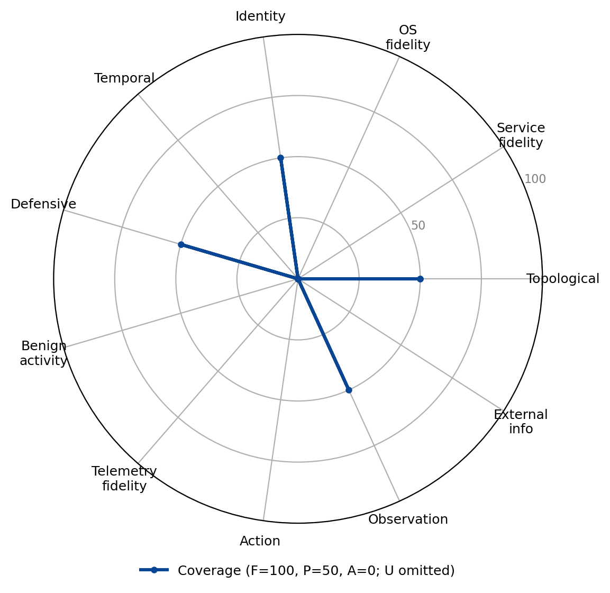

CyberBattleSim
Family: Abstract simulator · Category: A

Microsoft's abstract network-graph simulator for autonomous red-agent RL; models topology and the action/observation interface but abstracts services, OS, identity, and the defensive/telemetry context.
Best suited for: Network architecture attack-path analysis.
Dimension coverage
| Dimension | Coverage |
|---|---|
| Topological realism | Partial |
| Service fidelity | Absent |
| OS fidelity | Absent |
| Identity realism | Partial |
| Temporal dynamics | Absent |
| Defensive realism | Partial |
| Benign activity realism | Absent |
| Telemetry fidelity | Absent |
| Action realism | Absent |
| Observation realism | Partial |
| External information ecosystem | Absent |
Fit by objective
Suitability is a property of the (environment, objective) pair; a “not suitable” verdict names the dimension the objective needs that this environment abstracts.
| Objective | Verdict | Why |
|---|---|---|
| Targeted data exfiltration | Not suitable | does not provide Service fidelity, Temporal dynamics, Benign activity realism, Telemetry fidelity, External information ecosystem, dimensions this objective treats as critical |
| Ransomware deployment | Not suitable | does not provide Service fidelity, OS fidelity, Temporal dynamics, Telemetry fidelity, Action realism, dimensions this objective treats as critical |
| Worm / self-propagation | Not suitable | does not provide Temporal dynamics, a dimension this objective treats as critical |
| Credential-based privilege escalation | Not suitable | does not provide Service fidelity, OS fidelity, Action realism, dimensions this objective treats as critical |
| Evasive red-team operation | Not suitable | does not provide Service fidelity, OS fidelity, Temporal dynamics, Benign activity realism, Telemetry fidelity, Action realism, dimensions this objective treats as critical |
| Alert triage | Not suitable | does not provide Temporal dynamics, Benign activity realism, Telemetry fidelity, dimensions this objective treats as critical |
| Incident response | Not suitable | does not provide Temporal dynamics, Benign activity realism, Telemetry fidelity, Action realism, dimensions this objective treats as critical |
| Threat hunting | Not suitable | does not provide Temporal dynamics, Benign activity realism, Telemetry fidelity, dimensions this objective treats as critical |
| Attacker-defender simulation | Not suitable | does not provide Temporal dynamics, Benign activity realism, Telemetry fidelity, dimensions this objective treats as critical |
| Network architecture attack-path analysis | Partial fit | covers the required dimensions, but below the fit threshold |
| Cognitive resilience under adversarial content | Not suitable | does not provide Temporal dynamics, Benign activity realism, Telemetry fidelity, dimensions this objective treats as critical |
| Operating against agent-targeted deception | Not suitable | does not provide Benign activity realism, Action realism, dimensions this objective treats as critical |
Sub-dimension coverage (all 122 sub-dimensions)
This environment has been assessed at the sub-dimension level, with a recorded reason for every grade. The fit table above is computed at the dimension level, because most environments have not yet been assessed this finely and the two levels are not directly comparable.
Evidence: notes/src/environments.md CyberBattleSim section; element-level grades from the 2026-10-12 Claude + Codex dual extraction, reconciled under the structural-property and strict agent-exposure rules
Topological realism: 0 full, 4 partial, 6 absent
| Sub-dimension | Coverage | Reason |
|---|---|---|
| D1.1 Multi-segment graph with enforced path behavior | Partial | The attacker incrementally traverses an abstract directed node graph, with source ownership and per-port host firewalls constraining actions, but there are no routed segments or network-device paths. |
| D1.2 Perimeter and egress asymmetry | Partial | Separate per-node incoming and outgoing firewall rules affect attacker connect actions, but there are no perimeter proxies, DNS controls, or route-specific detection differences. |
| D1.3 Network devices as manageable entities | Absent | Routers, switches, and firewalls are not attacker-visible manageable nodes; filtering is only an internal per-host rule list. |
| D1.4 Layer 2/3 protocol fidelity | Absent | No L2/L3 protocol exchanges such as ARP, DHCP, LLMNR, or 802.1X are exposed to the attacker. |
| D1.5 Position-dependent traffic visibility | Absent | The attacker receives no packet or traffic view and cannot sniff, intercept, or configure port mirroring from any position. |
| D1.6 Lateral reachability and file transfer | Partial | The attacker deliberately performs credentialed lateral connections over abstract SSH, SMB, RDP, and similar ports, but no real transfer mechanism or flow is generated. |
| D1.7 Discoverable (not given) topology | Partial | Only initial footholds are known; node-leak and probe outcomes incrementally expose nodes, properties, and explored edges, though results are symbolic and clean. |
| D1.8 Staging and exfil-path asymmetry | Absent | Customer-data outcomes exist, but the attacker cannot stage data or choose among asymmetric paths to an external exfiltration point. |
| D1.9 Remote-access and cross-organizational boundaries | Absent | No VPN, jump-host, vendor/MSP, or federated boundary object with distinct authentication and logging is exposed. |
| D1.10 Believable decoy placement | Absent | CyberBattleSim supplies no decoy nodes or topology-aware decoy-placement action. |
Service fidelity: 0 full, 0 partial, 14 absent
| Sub-dimension | Coverage | Reason |
|---|---|---|
| D2.1 Real, versioned, fingerprintable daemons | Absent | Service names and version-like strings are symbolic preconditions and ports, not running protocol-conformant daemons the attacker can fingerprint. |
| D2.2 Exploitable vulnerable builds with heterogeneous patch state | Absent | Vulnerabilities are abstract IDs with Boolean preconditions and success probabilities, not exploitable software builds with observable patch levels. |
| D2.3 Web applications with real code paths and session stack | Absent | Websites are symbolic nodes and vulnerability outcomes; no real application code, HTTP session stack, cookies, or federation flow is exposed. |
| D2.4 Email infrastructure | Absent | There are no mailboxes or functioning SMTP, IMAP, Exchange, or mail-rule interfaces for the attacker. |
| D2.5 DNS infrastructure | Absent | No authoritative resolver, DNS records, TTLs, NXDOMAIN behavior, or query stream is exposed. |
| D2.6 File shares and enterprise repositories | Absent | GitHub, SharePoint, and share concepts appear only as named nodes or scripted credential-leak outcomes, not repositories with browsable content and ACLs. |
| D2.7 Authentication-service and PKI surfaces | Absent | Credential acceptance is a string-membership check on a listening service; no authentication server, lockout, MFA, hash format, or PKI surface exists. |
| D2.8 Network-device management services | Absent | No SNMP, device CLI, or configuration-backup service is present. |
| D2.9 Enterprise deployment and supply-chain services | Absent | No endpoint deployment system, package registry, CI/CD pipeline, signed artifact, or update trust relationship is modeled. |
| D2.10 Legitimate RMM and dual-use web services | Absent | The attacker cannot install or use RMM tools, SaaS APIs, or dual-use web services as command-and-control channels. |
| D2.11 Revocation-aware service state | Absent | There are no revocable sessions, token consumers, caches, or service-specific revocation semantics. |
| D2.12 Operational recovery surfaces | Absent | Defender reimaging is a simulator state reset, not an attacker-visible backup, restore, rollback, or recovery service surface. |
| D2.13 Dependency-aware response effects | Absent | Services have no modeled identity, storage, database, or application dependency graph whose failures the attacker can observe. |
| D2.14 Believable decoy service context | Absent | No decoy service with attacker-visible protocol, content, workflow, or business context exists. |
OS fidelity: 0 full, 0 partial, 8 absent
| Sub-dimension | Coverage | Reason |
|---|---|---|
| D3.1 Persistence surface | Absent | No registry, service, task, cron, WMI, launchd, or reboot-surviving persistence object is exposed. |
| D3.2 Execution-flow control and scripting engines | Absent | There is no shell, scripting engine, loader behavior, LOLBin surface, allowlisting, syscall policy, or OS-local firewall interface. |
| D3.3 Process, memory, and privilege-boundary primitives | Absent | not part of the agent's observations or action set in this environment |
| D3.4 Configuration stores, filesystem semantics, and kernel/trust layer | Absent | No filesystem, registry or /etc store, kernel, driver, code-signing, Secure Boot, or TPM artifact is available to inspect or modify. |
| D3.5 Credential material exposure on the endpoint | Absent | not part of the agent's observations or action set in this environment |
| D3.6 Discovery, evasion, and anti-forensics surface | Absent | not part of the agent's observations or action set in this environment |
| D3.7 Impact primitives and document-execution behavior | Absent | The attacker cannot encrypt or wipe files, stop real services, reboot an OS, or exercise document-based execution semantics. |
| D3.8 Restorable host objects | Absent | No files, packages, disks, configurations, or known-good integrity objects are exposed; reimaging only resets abstract node state. |
Identity realism: 0 full, 2 partial, 11 absent
| Sub-dimension | Coverage | Reason |
|---|---|---|
| D4.1 Populated directory and local identity stores | Absent | There is no attacker-enumerable AD, LDAP, local account database, users/groups hierarchy, OU, SPN, or identity-store ACL. |
| D4.2 Credential landscape with realistic material in real locations | Partial | Scenarios expose varied abstract passwords, reused credentials, SAS tokens, service-principal credentials, and planted secrets in history or files, all usable by the attacker. |
| D4.3 Kerberos and NTLM protocol fidelity | Absent | No Kerberos, NTLM, relay, roasting, or legacy name-resolution protocol exchange is implemented. |
| D4.4 Federation, SSO, and web session material | Absent | not part of the agent's observations or action set in this environment |
| D4.5 MFA as a design space and auth-process modification surface | Absent | No MFA factor, prompt, conditional-access decision, authentication-package modification, or contextual MFA record is exposed. |
| D4.6 Account lifecycle and tiered administration | Absent | Accounts have no create, disable, reset, group-change, administrative-tier, LAPS, or managed-service-account lifecycle. |
| D4.7 Session reality and valid-account usage | Partial | A connect action deliberately reuses a discovered credential against a target service and changes ownership, but no persistent logon-session type, ticket, hash, or hijackable session exists. |
| D4.8 Certificate and PKI identity | Absent | There is no CA, certificate template, client-certificate authentication, or observable issuance, renewal, and revocation lifecycle. |
| D4.9 Enumeration and identity-relationship surface | Absent | The attacker cannot query an identity system for users, groups, sessions, SPNs, ACLs, trusts, or account state. |
| D4.10 Human-layer impersonation and external-to-internal bridges | Absent | not part of the agent's observations or action set in this environment |
| D4.11 Policy-bound authorization as identity-layer state | Absent | Authorization is only a static per-service allowed-credential list, not group-, claim-, role-, or policy-derived identity-layer state. |
| D4.12 Propagating credential control and access recovery | Absent | No credential revocation, reissue, unlock, restoration, propagation delay, or access-recovery workflow is available. |
| D4.13 Believable deceptive identities | Absent | No decoy account, credential, token, or persona is presented to the attacker as a believable identity. |
Temporal dynamics: 0 full, 0 partial, 11 absent
| Sub-dimension | Coverage | Reason |
|---|---|---|
| D5.1 Real wall-clock progression | Absent | Environment time advances by Gym steps; measured execution duration and internal datetime bookkeeping do not create attacker-actionable wall-clock semantics. |
| D5.2 Scheduled execution and reboot semantics | Absent | No attacker-visible scheduler or reboot exists, and no persistence state is tested across real reboot boundaries. |
| D5.3 Session, token, and credential lifetimes | Absent | Credentials are timeless string tokens with no ticket, cookie, certificate, password-age, or lockout expiry. |
| D5.4 Human activity rhythms | Absent | There are no users, business hours, shifts, weekends, holidays, or time-varying human response. |
| D5.5 Long-horizon engagement support | Absent | Episodes can have many steps but do not model weeks of dwell, log accumulation, or patch drift. |
| D5.6 Event-correlation windows and rate-limiting | Absent | Defender scan frequency is counted in simulation steps, with no real-time correlation, retention, lockout, API, or connection-rate window. |
| D5.7 Delay-based evasion and staged operations | Absent | The attacker cannot sleep, schedule delayed execution, beacon, or pace a staged transfer using real elapsed time. |
| D5.8 State decay and temporal detection signals | Absent | No cache TTL, log rotation, certificate aging, or time-of-day anomaly signal is exposed. |
| D5.9 Non-instant defender effects with observable before/after | Absent | not part of the agent's observations or action set in this environment |
| D5.10 Retained containment and recovery history | Absent | No attacker-visible response timeline records when containment or recovery actions occurred and what they changed. |
| D5.11 Triggered and delayed activation of injected content | Absent | No agent-ingested content or injected instruction can be armed for event- or time-delayed activation. |
Defensive realism: 0 full, 2 partial, 10 absent
| Sub-dimension | Coverage | Reason |
|---|---|---|
| D6.1 Perimeter, egress, and traffic inspection | Partial | Abstract per-host incoming and outgoing port rules deliberately allow or block attacker connections, but there is no stateful perimeter, proxy, WAF, IPS, DNS filter, or inspection. |
| D6.2 Email security stack | Absent | No email service or email-security gateway, sandbox, forwarding-rule audit, or sending-anomaly detector exists. |
| D6.3 Endpoint protection, EDR, and exploit mitigations | Absent | Endpoint protection may appear only as a node-property string; the attacker cannot observe or interact with AV, EDR, AMSI, tamper protection, or exploit mitigations. |
| D6.4 Application-execution controls | Absent | No application allowlist, script restriction, macro policy, or reputation prompt can block or alter attacker execution. |
| D6.5 Authentication hardening | Absent | There is no lockout, MFA, protocol hardening, conditional access, or federation-hardening control. |
| D6.6 Patching and configuration hardening | Absent | Static vulnerability placement and property labels do not expose patching, baseline rollout, legacy-protocol configuration, or time-varying hardening to the attacker. |
| D6.7 Segmentation enforcement | Absent | Host firewall lists are static scenario state; no defender-operated, logged, identity-aware segmentation change is exposed. |
| D6.8 Detection rule library and cloud-plane controls | Absent | No detection-rule library, UEBA baseline, IAM/SCP/RBAC plane, CSPM, or cloud detector is available. |
| D6.9 Data-loss prevention controls | Absent | No content-aware DLP control inspects or blocks attacker data movement. |
| D6.10 Response, deception, and control-configuration action space | Partial | An optional stochastic defender scans and reimages compromised nodes with configurable probability, capacity, and frequency, and the attacker can observe lost footholds; response remains a single abstract mechanism. |
| D6.11 ML-based defenses, modeled and evadable | Absent | The probability-based defender is not an attacker-interactable ML detector and has no modeled adversarial-evasion or integrity behavior. |
| D6.12 Cognition-targeted deception | Absent | No lure or artifact contains cognition-targeted instructions or masqueraded content for the attacker agent. |
Benign activity realism: 0 full, 0 partial, 10 absent
| Sub-dimension | Coverage | Reason |
|---|---|---|
| D7.1 Simulated users with role and behavioral diversity | Absent | No benign user agents, roles, personas, working hours, or workforce diversity generate attacker-observable activity. |
| D7.2 User interactive input and active sessions | Absent | There are no keyboard, mouse, clipboard, screen, console, RDP, or SSH sessions created by simulated users. |
| D7.3 Browsing, document authorship, and accumulated web state | Absent | No user browsing, authenticated web state, documents, authorship metadata, or accumulated browser artifacts exist. |
| D7.4 Email activity | Absent | No mailbox traffic, correspondence, calendar activity, or PST/OST content is generated. |
| D7.5 Credential-use traffic and lived-in accumulation | Absent | Cached credentials are scenario-planted outcomes rather than artifacts produced by recurring benign authentication traffic. |
| D7.6 Administrative and service baseline | Absent | No legitimate administrative commands, scheduled maintenance, patching, backup, updater, telemetry-agent, or MDM baseline runs. |
| D7.7 Network and data-volume baselines | Absent | No background network, DNS, east-west, SaaS, update, telemetry, or data-volume baseline is observable. |
| D7.8 Share, repository, and peripheral activity | Absent | No benign share, collaboration, repository read/write, USB, printer, or Bluetooth activity occurs. |
| D7.9 Temporal structure, prompt response, and signal quality | Absent | No benign temporal distribution or modeled human response to phishing, MFA, UAC, or reputation prompts exists. |
| D7.10 Business-context lure plausibility | Absent | There is neither genuine business activity nor lure content in which deception could plausibly blend. |
Telemetry fidelity: 0 full, 0 partial, 11 absent
| Sub-dimension | Coverage | Reason |
|---|---|---|
| D8.1 Process and script execution telemetry | Absent | The attacker receives no process, command-line, image-load, script-block, AMSI, or auditd telemetry. |
| D8.2 Authentication telemetry | Absent | Credential use yields symbolic action outcomes, not Windows, Kerberos, NTLM, PAM, sshd, sudo, wtmp, or correlated authentication records. |
| D8.3 Object access: file, registry, and IPC | Absent | With no filesystem, registry, or IPC objects, there are no corresponding object-access audit events. |
| D8.4 Network telemetry | Absent | Connections do not emit attacker-visible firewall, flow, Zeek, Suricata, DNS, HTTP, TLS, or NetFlow records. |
| D8.5 Endpoint/EDR streams | Absent | No EDR, API-hook, memory-scan, YARA, eBPF, or EndpointSecurity stream exists. |
| D8.6 Identity-provider, cloud-plane, and application logs | Absent | No identity-provider, cloud control-plane, Kubernetes, email, proxy, CASB, application, or database audit log is exposed. |
| D8.7 Schema fidelity, volume, and noise floor | Absent | Observations are compact ground-truth-like arrays and typed outcomes, not real telemetry schemas, fleet-scale volume, or activity-derived noise. |
| D8.8 Coverage gaps, timing, and retention tiers | Absent | No sensor coverage variation, offline agents, dropped logs, ingestion lag, or retention tier is modeled. |
| D8.9 Integrity, enrichment, and cross-system correlation | Absent | There is no SIEM copy, sensor heartbeat, out-of-band collection, enrichment, entity resolution, or cross-source correlation. |
| D8.10 Response outcome telemetry with explainable decisions | Absent | Firewall and reimage effects change simulator state but emit no explainable response record with actor, policy, reason, provenance, and timestamp. |
| D8.11 Recovery and deception telemetry | Absent | Reimaging emits no recovery-integrity record, and there are no deception interactions or investigation trails. |
Action realism: 0 full, 3 partial, 8 absent
| Sub-dimension | Coverage | Reason |
|---|---|---|
| D9.1 Command fidelity | Absent | The attacker selects vulnerability IDs and indexed actions rather than executing a real shell with stdout, stderr, exit codes, pipes, or redirection. |
| D9.2 API fidelity | Absent | No Win32, NT, POSIX, cloud, or Kubernetes API is callable and no real error code or kernel effect is returned. |
| D9.3 Parameter space | Partial | Actions have typed source, target, vulnerability, port, and credential-index parameters, but the spaces are small enumerations rather than real tool or exploit parameters. |
| D9.4 Failure realism | Absent | not part of the agent's observations or action set in this environment |
| D9.5 Composition, tool transfer, and interactive sessions | Absent | abstract local/remote-attack and connect super-actions, not composition from primitives or tool transfer |
| D9.6 State effects, scheduling, and cost budgets | Partial | Actions persistently change discovered, owned, and privilege state and vulnerabilities carry numeric costs, but there is no real scheduling, telemetry cost, or irreversible OS effect. |
| D9.7 Observability, C2 semantics, and defender action | Absent | Results are immediate symbolic fields and rewards, with no human-equivalent command output, gradual output, C2 queueing, cancellation, or operational defender tooling. |
| D9.8 Privilege-scoped action surface and realistic tool-use idiom | Partial | Owned-node and LocalUser/Admin/System state scope some actions and preconditions, but the attacker still uses a handcrafted menu rather than a shell or real tools. |
| D9.9 Distinct defender action families | Absent | The optional defender exposes only stochastic scanning and reimaging, not distinct hardening, credential, eviction, isolation, mediation, and restoration families. |
| D9.10 Multi-step defender operations require ordered sequencing | Absent | No defender recovery operation exposes ordered intermediate review, reissue, rollback, integrity-check, and validation states. |
| D9.11 Tool and action channel as an attack surface | Absent | Action definitions, runtime results, and tool channels cannot be poisoned or used to inject instructions into the attacker agent. |
Observation realism: 0 full, 5 partial, 7 absent
| Sub-dimension | Coverage | Reason |
|---|---|---|
| D10.1 Position- and privilege-dependent observability | Partial | Owned source nodes determine available local and remote actions and probing reveals properties incrementally, but privileges do not produce realistic command views and there is no traffic vantage. |
| D10.2 Partial, incremental, scale-appropriate results | Partial | Nodes, properties, and credentials arrive incrementally through attack outcomes, but result sets are small fixed arrays without enterprise-scale pagination or throttling. |
| D10.3 Noise, uncertainty, and time-variance | Absent | not part of the agent's observations or action set in this environment |
| D10.4 Protocol, banner, and metadata fidelity on reception | Absent | No SMB, HTTP, Kerberos, or other protocol response, banner, error packet, metadata side channel, or timing behavior is returned. |
| D10.5 Defender-side observation surface | Absent | The attacker has no access to a SIEM, EDR console, SOAR queue, alert evidence, or raw-event pivot workflow. |
| D10.6 Blind spots and observation cost | Partial | Undiscovered nodes and properties are genuine blind spots, and probing consumes an action and vulnerability cost, but it produces no real telemetry or stealth tradeoff beyond abstract detection rates. |
| D10.7 Feedback loops and multi-source correlation | Partial | Action outcomes update discovered nodes, properties, credentials, and privilege for iterative probe-and-adapt behavior, but there are no multiple disagreeing sources to correlate. |
| D10.8 Oracle-free property | Partial | partially observable with the action space scoped to discovered nodes, so the agent is not handed the full topology |
| D10.9 Before/after response observation | Absent | not part of the agent's observations or action set in this environment |
| D10.10 High-context deception observation | Absent | No decoy interaction or correlated deception investigation view is exposed. |
| D10.11 Agent-directed content injection | Absent | No logs, filenames, tickets, alerts, email, documents, or tool output carry attacker-controlled instructions into the agent observation channel. |
| D10.12 Agent-targeted perception and trust manipulation | Absent | The symbolic observation interface has no rendered content, citations, links, trust signals, or multimodal surface that can manipulate perception. |
External information ecosystem: 0 full, 0 partial, 10 absent
| Sub-dimension | Coverage | Reason |
|---|---|---|
| D11.1 Authoritative DNS, WHOIS, and certificate transparency | Absent | No external DNS, reverse DNS, WHOIS/RDAP, passive DNS, certificate-transparency, OCSP, or CRL source can be queried. |
| D11.2 OSINT surface: public web, social, repos, paste | Absent | No public website, employee social footprint, breach corpus, live code host, paste site, search engine, Shodan, or Censys surface exists. |
| D11.3 Threat intel, reputation, and external scanner observability | Absent | Neither side can query threat-intelligence or reputation services, and no external scanner observes attacker reconnaissance. |
| D11.4 Attacker-controlled domains, hosting, and C2 servers | Absent | The attacker cannot register domains, rent hosting, deploy C2 servers or redirectors, configure TLS, or incur infrastructure lifecycle cost. |
| D11.5 Legitimate-service abuse for C2 blending | Absent | No CDN, SaaS, Tor, or residential proxy is available as a legitimate-looking command-and-control channel. |
| D11.6 Attacker email and weaponized content hosting | Absent | No attacker mail server, phishing page, fake portal, exploit-kit host, staged malware host, drive-by, or watering-hole path exists. |
| D11.7 Compromised third parties and supply chain | Absent | No third party, SaaS vendor, update server, package registry, maintainer, or CI/CD chain can be compromised. |
| D11.8 External identity and federation surface | Absent | No vendor identity provider, OAuth consent, SAML/OIDC assertion, tenant, or cloud-federation boundary is represented. |
| D11.9 Full DNS resolution path, infrastructure lifecycle, and cost/attribution | Absent | No traversable DNS hierarchy, domain reputation lifecycle, infrastructure aging, monetary cost, takedown delay, or attribution trail exists. |
| D11.10 Poisoned information sources and feeds | Absent | The attacker consults no retrieval store, threat feed, repository, web source, or package index that could be poisoned. |